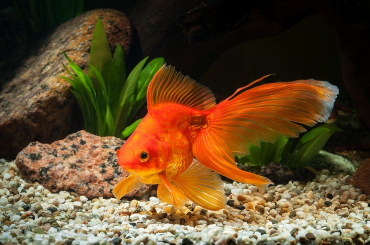
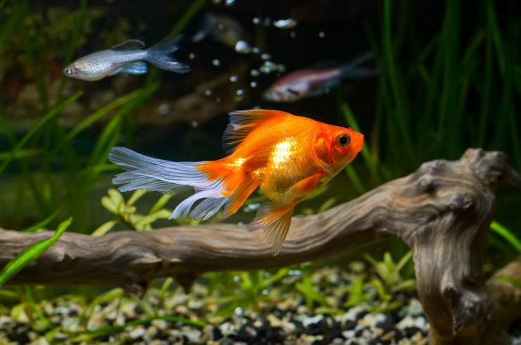

Золоті рибки (Carassius auratus) — це популярні акваріумні риби, відомі своїм яскравим забарвленням і різноманітністю форм.
Вони належать до родини коропових і походять з Китаю, де були одомашнені понад тисячу років тому.
Золоті рибки були одними з перших риб, що розводилися в декоративних цілях. Спочатку вони мали більш природне, сріблясто-сіре забарвлення,
але з часом селекція дозволила вивести численні варіації яскраво-помаранчевих, червоних та золотистих кольорів.
Особливістю золотих рибок є їх здатність адаптуватися до різних умов утримання.
Вони можуть жити як у невеликих акваріумах, так і в штучних ставках на відкритому повітрі.
Золоті рибки невибагливі у догляді, однак потребують певного рівня фільтрації води та правильного раціону, щоб уникнути проблем зі здоров'ям.
Варто також враховувати, що ці риби мають високу тривалість життя — при належному догляді вони можуть прожити до 20 років.

Окрім цього, золоті рибки — це символ удачі та процвітання в багатьох культурах, особливо в східноазійських країнах.
Їх часто утримують у домівках і офісах для залучення позитивної енергії.
Водночас вони є об'єктом численних художніх зображень, літературних творів і міфів,
що підкреслює їх важливе місце в культурній спадщині.